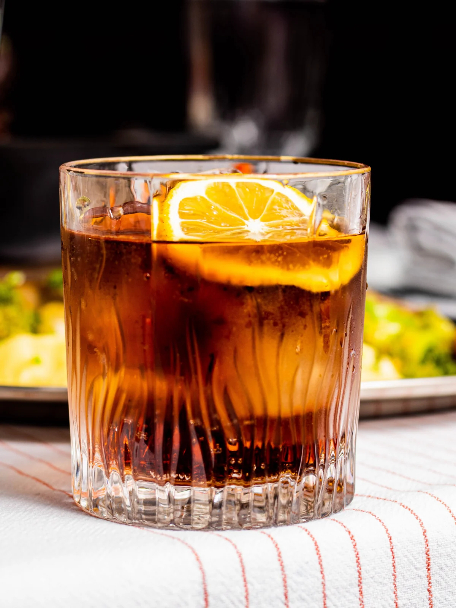
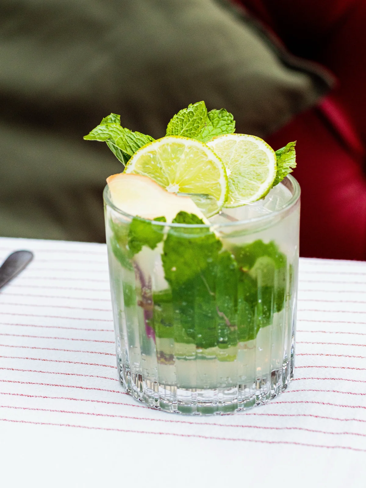

01 / LA FAVORITA
MÁS FUENTES PÚBLICAS
La Favorita
Ultramarinos y cocina española de raíz.



Relato documentado · no es un reconocimiento
Una propuesta de cocina española y tapas que recupera el imaginario de los ultramarinos: producto, recetas tradicionales y una mesa para compartir.
COCINA ESPAÑOLA · TAPAS
Un archivo de ultramarinos: rótulos, memoria y cocina española de raíz.
La cobertura institucional y periodística describe una propuesta de cocina española y tapas, narrada desde el imaginario de los ultramarinos y las recetas tradicionales.
E001–E004 · E013–E015 · contexto público atribuido
Las crónicas de 2024 no confirman la carta actual ni el estado del espacio.
Fuente institucional · ICEXArchivo social de La Favorita · vino y coctelería. Las imágenes no confirman carta ni disponibilidad actuales.